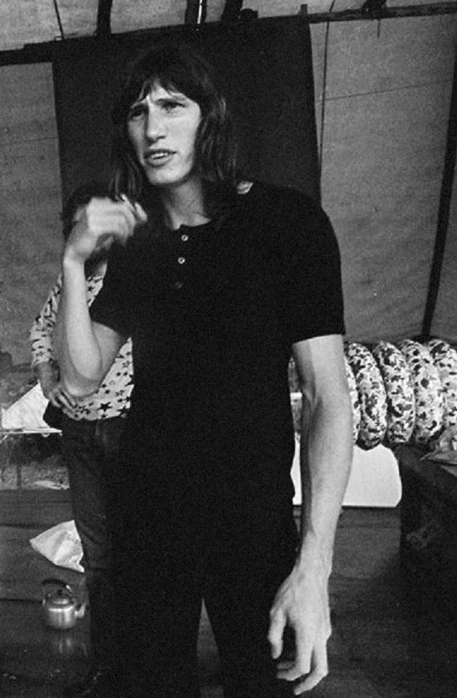

Roger Waters

George Roger Waters (Guildford, 6 de setembro de 1943) é um músico, cantor e compositor inglês. É um dos fundadores da banda de rock progressivo/rock psicodélico Pink Floyd, na qual atuou como baixista e vocalista. Após a saída de Syd Barrett do grupo, em 1968, Waters se tornou o letrista da banda, o principal compositor e o líder conceitual do grupo. Subsequentemente, a banda conquistaria sucesso internacional nos anos 70 com os álbuns conceituais The Dark Side of the Moon, Wish You Were Here, Animals e The Wall. Ainda que seu instrumento primário no Pink Floyd tenha sido o baixo, ele também já experimentou sintetizadores e tape loops, além de tocar guitarra rítmica e violão em gravações e apresentações. Alegando diferenças criativas com o grupo, Waters deixou o Pink Floyd em 1985, iniciando uma batalha legal com os membros restantes pelo direito futuro de usar o nome e o material do grupo. A disputa encerrou-se em 1987 e levou quase dezoito anos para que ele tocasse novamente com o Pink Floyd em 2005, no evento Live 8. Estima-se que, até o ano de 2010, o grupo tenha vendido mais de 200 milhões de álbuns ao redor do mundo, incluindo 75 milhões vendidos apenas nos Estados Unidos. A carreira solo de Waters inclui cinco álbuns de estúdio: Music From the Body (com Ron Geesin, 1970), The Pros and Cons of Hitch Hiking (1984), Radio K.A.O.S. (1987), Amused to Death (1992) e Is This the Life We Really Want? (2017). Em 1990, Waters produziu um dos maiores concertos de rock da história, The Wall — Live in Berlin, com um público estimado em duzentas mil pessoas. Em 1996, ele foi introduzido ao Hall da Fama do Rock and Roll, como membro do Pink Floyd. Waters tem estado em turnê extensivamente desde 1999, tocando The Dark Side of the Moon integralmente em suas turnês mundiais de 2006 a 2008. Em 2 de julho de 2005, ele reuniu os seus ex-parceiros de Pink Floyd: Nick Mason, Richard Wright e David Gilmour para o Live 8, um concerto de caridade. Foi a primeira aparição do grupo com Waters desde a última performance deles, 24 anos antes. Em 2010, ele iniciou a turnê The Wall Live, que inclui uma performance completa do álbum The Wall. Durante essa turnê, Gilmour e Mason (os únicos remanescentes do Pink Floyd, desde a morte de Richard Wright), mais uma vez, se uniram a Waters, em 12 de maio de 2011, na O2 Arena, em Londres. Tocou, com Gilmour, "Comfortably Numb"; Mason se juntou em "Outside the Wall". Waters se casou quatro vezes, tendo três filhos: Harry (1976), India (1978) e Jack Fletcher (1997).